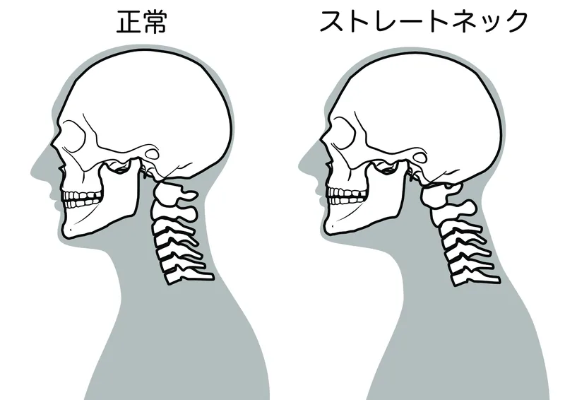

01
同じ姿勢が長く続く
パソコンやスマートフォンを見る姿勢が続くと、頭を支える首や肩の筋肉が休みにくくなります。
「首が痛くて上を向けない」「手までしびれてくる」——
その症状、首まわりの機能不全が原因かもしれません。
首は頭を支えながら、振り向く、上を向く、下を見るといった動きを担っています。
デスクワークやスマートフォンで同じ姿勢が続いたり、肩甲骨や背中が動きにくくなったりすると、本来は上半身全体で分担する負担が首に集まることがあります。
ただし、首の痛みや腕のしびれは、頚椎の状態だけでなく肩・肘・手首などの影響でも起こるため、症状だけで原因を判断することはできません。
痛みやしびれが出る姿勢、首・肩甲骨・背中の動き、医療機関での検査状況を確認することが大切です。

パソコンやスマートフォンを見る姿勢が続くと、頭を支える首や肩の筋肉が休みにくくなります。
背中や肩甲骨が十分に動かないと、振り向く、上を向く動作を首だけで補い、負担が集まりやすくなります。
運転、家事、デスクワークなどで腕を前へ出し続けると、肩が前に入り、首まわりが緊張することがあります。
枕の高さや寝返りのしにくさによって、朝に首のこわばりや動かしづらさを感じることがあります。
同じ姿勢や腕を前で使う
時間が続く
肩甲骨や背中の動きが
小さくなる
首が動きや支えを
補い続ける
首の痛み・重さ・腕の違和感を
感じることがある
これは症状が出る流れの一例です。原因や状態は一人ひとり異なるため、首の画像所見だけでなく、腕や手の症状、日常動作も確認する必要があります。
首や肩をやさしくほぐすと、一時的に軽く感じることがあります。
しかし、仕事中の姿勢、肩甲骨や背中の動きにくさ、腕の使い方などが残っていると、日常生活へ戻ったときに再び首へ負担が集まりやすくなります。
大切なのは、首を緩めることだけではありません。
どの姿勢や動作で症状が変わるのかを確認し、首・肩甲骨・背中・腕の動きを合わせて整理することです。
首の痛みや腕のしびれには、医療機関での検査や治療が優先されるものがあります。以下の場合は整体を受ける前にご相談ください。
同じ「頚椎症」と言われた方でも、痛みやしびれが出る姿勢、範囲、生活で困る動作は異なります。
柏市の整体院ひざこぞうでは、医療機関で確認すべき状態を分けたうえで、首・肩甲骨・背中・腕の動き、仕事や睡眠の環境まで確認します。
カウンセリングと身体のチェックをもとに、整体で確認できる範囲と施術方針をご説明します。

当院では、首だけを緩めるのではなく、「動かす・支える・使い方を整える」という流れで、首へ負担が集中しにくい状態を目指します。
動かす｜可動性
症状が変化する姿勢を確認しながら、首・肩甲骨・背中の動きにくい部分へ無理のない範囲でアプローチします。
支える｜安定性
首や肩へ力を入れ続けなくても姿勢を保ちやすくなるように、状態に合わせた運動を行います。
使う｜動作改善
デスクワーク、運転、家事などを確認し、続けやすい姿勢や休み方、セルフケアをお伝えします。
痛みやしびれが出る姿勢、病院で言われたことなどをLINEで送っていただければ、来院前のご相談も可能です。
通院頻度は、痛みやしびれの強さ、症状が続いている期間、医療機関での検査状況、生活環境によって異なります。
初回に身体の状態を確認したうえで、必要な頻度と期間の目安をご説明します。
無理に通院を勧めることはありませんので、ご希望や生活状況も含めてご相談ください。
MEDICAL GUIDANCE
症状の出方には個人差があります。迷う場合や症状が強い場合は、まず医療機関へご相談ください。
次のような場合は、整体の予約より医療機関への相談を優先してください。
緊急ではなくても、早めの検査や診察が大切な状態があります。
医療機関との役割を分けながら、次のような相談に対応します。
このページは一般的な情報提供であり、診断を目的とするものではありません。症状や状態は一人ひとり異なるため、必要に応じて医療機関へご相談ください。
写真は左右にスライドできます


予約前に特に多い不安だけを、短くまとめました。
「自分の症状は良くなるのだろうか」「どんな施術をされるのか不安」——
そう思っている方こそ、まずはお気軽にご相談ください。
初回のカウンセリングで、あなたの状態を丁寧に確認したうえで、施術方針をご提案します。
柏市をはじめ、松戸市・我孫子市・取手市・野田市・流山市・守谷市など近隣エリアからもご来院いただいています。